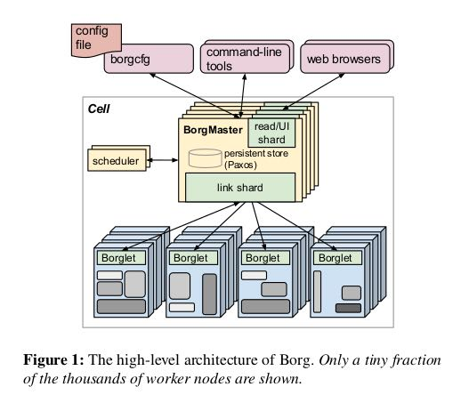

Large-scale cluster management at Google with Borg
这个资源管理系统在Google据说使用很多年了，但是直到2015年才公开论文。并且此时Omega以及k8s都已经出来了。文章里面没有说什么具体的调度算法，但是说到了资源调度的需求，问题以及这些问题的解决办法。
Borg管理的是上千台机器资源，用户只需要提出资源申请，然后就可以往这上面提交作业了。下面是Borg的结构图，可以看到：
- 最外层是辅助工具以及用户提交作业描述
- Borg Master用来和Borglet进行通信，Borglet就是这些机器上面运行的Agent
- Borg Master是通过Paxos做高可用的，然后提供read shard专门用于查询，减轻压力
- Scheduler从Master里面单独分离出去了，据说是因为Master压力太大的原因
- Borglet和Borg Master之间通信经过Replica(link shard)，然后转交给Borg Master也是为了减少压力

Borg上面主要跑两类任务：服务类任务处理short-lived latency-sensitive request, 批量类任务延迟不敏感通常需要跑几秒到几天。两类任务都混布在所有的机器上，所以协调起来还是蛮有难度的。MapReduce, FlumeJava, MilWheel, Pregel, GFS, CFS, BigTable, Megastore都跑在这上面，还是蛮强的。BorgMaster会定期将自己的状态做checkpoint, 并且保存自己收到的requests. 这样想要改进BorgMaster调度算法的话就可以做线下模拟了。
一个资源池叫做一个Cell，通常是10k台机器组成，异构资源（CPU, Mem, SSD/HDD, public IP等等）。机器并没有做虚拟化，一方面是提升效率，另外也是设计之初CPU也没有虚拟化的支持（可见年代很早了）。用户提交Job，Job由Tasks组成，Job和Task都需要编写资源描述文件，估计为了使用方面有模板，然后用户通过RPC提交上去。C++编写的程序都需要使用静态链接，不然跑着缺少了动态库就悲剧了。用户提交上去的job/task都有对应的域名(taskid. jobname. user. cellname)，可以通过HTTP去查看这些task运行状态。所有这些job/task运行记录都会保存起来放在Dremel里面，后面可以去做cluster workload分析。
一台机器上的资源叫做alloc，对应task需要的；一个Job需要的资源就叫做alloc set. 每个job都有优先级：monitoring, prod, batch, best effort. 到了alloc set这里之后，其实还缺少一个维度就是时间，我要保留多长时间这个东西。如果加上时间就叫做quota, 这个quota allocation就是资源分配分配的过程。一旦quota allocation准入之后，就是决定放在那些机器上执行的问题了。最开始Borg用的是E-PVM打分来决定一个allocation好不好，但是这种打分会比较倾向平均分布于所有机器避免spike loads，后果就是容易造成fragmentation类似worst-fit. 而如果使用best-fit的话，让机器尽可能地聚拢，后果就是应对spike load不行，尤其是许多batch jobs通常声明资源少，但是实际是使用空闲资源。还有个考虑就是binary，尽量地选用本地磁盘有binary的机器(启动时间通常是25s, 其中安装package占用了80%)
Borg Master是整个系统的单点，配置是10-14 CPU, 50GB内存，请求数量在10k/min. Scheduler之前是在Master里面，但是为了减少压力分离出去了。Scheduler读取的是Replica Cell State，计算一个allocation plan提交给Borg Master. Master可以决定是否接受。Borglet会上报自己的全量信息，为了减少Master压力，会先提交给Replica(link shard)， Replica会计算增量信息提交给Master.
关于资源隔离有这么几个重要的点：
- 50%机器上面运行>9 tasks，90pth机器运行25 tasks，每个机器上大约运行4500线程
- 内部没有做虚拟化，但是对外产品GAE/GCE跑了KVM
- 现在使用cgroup来做资源隔离，效果不错，但是没有办法隔离memory bandwidth以及L3 cache污染这种底层的事情
- 资源可以分为两类：可压缩的（通过限速什么的，比如CPU cycles, IO bandwidth）以及不可压缩的(Memory, Disk Space). 资源不够的时候，对低优先级的可压缩资源可以做限速，对于不可压缩资源就只能kill.
- 每个机器上不能只有一个IP. 不然程序运行的时候还要考虑port.